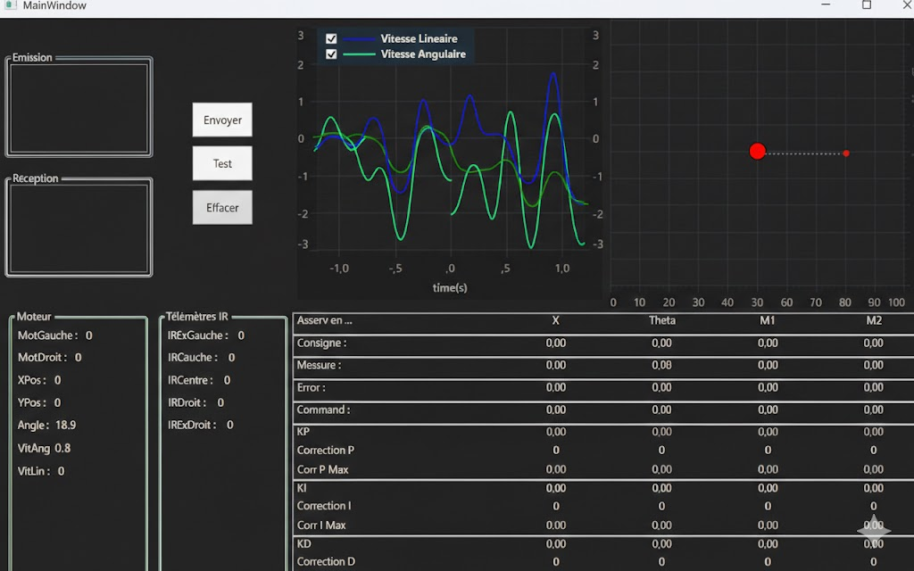

Robot Mobile Autonome
Vision Intelligente, Télémétrie & Navigation
L'Objectif
Conception d'un robot mobile polyvalent capable de naviguer de manière autonome dans un environnement complexe grâce à une caméra intelligente pour la détection d'obstacles et d'objets. Le système offre une flexibilité totale : il peut opérer seul, être télécommandé manuellement, ou recevoir des consignes de position précises envoyées depuis un ordinateur pour exécuter des trajets planifiés.
Vision Intelligente
Intégration d'une caméra embarquée dotée d'algorithmes de traitement d'image. Celle-ci analyse l'environnement en temps réel pour détecter des formes, des couleurs spécifiques et identifier des objets. Cette vision artificielle permet au robot de se guider, de suivre des lignes ou d'éviter des obstacles de façon dynamique sans intervention extérieure.
Pilotage Multi-Modes
Développement d'une architecture de contrôle hybride offrant trois modes de fonctionnement distincts : navigation 100% autonome basée sur les capteurs, pilotage manuel via une télécommande Bluetooth pour les manœuvres délicates, et guidage par ordinateur où le robot reçoit et exécute des consignes de coordonnées envoyées à distance.
Supervision & Télémétrie
Mise en place d'une liaison série (UART) bidirectionnelle avec un poste de contrôle (Visual Studio). Ce système permet non seulement d'envoyer des ordres de déplacement, mais aussi de recevoir en direct toutes les données de télémétrie du robot : vitesse, position, état des capteurs et diagnostics de l'asservissement.
Capteurs & Actionneurs
Caméra Intelligente (Pixy/Cam)
Analyse visuelle de l'environnement pour la reconnaissance d'objets, de couleurs et le suivi de trajectoire.
Capteurs de Distance (LIDAR/IR)
Balayage de l'espace pour la détection d'obstacles fixes ou mobiles et la prévention des collisions.
Moteurs & Encodeurs
Propulsion du châssis et mesure précise de la rotation des roues pour l'odométrie et l'asservissement.
Cerveau (ESP32)
Unité centrale de traitement assurant la fusion des données capteurs et le calcul de la cinématique.
Mon Ressenti
Ce que j'ai aimé
- La liberté de concevoir un robot "fait maison" sans contraintes de compétition
- L'intégration de la vision par caméra pour l'autonomie du robot
- La satisfaction de voir un petit robot se déplacer intelligemment
- La polyvalence : mécanique, électronique et logiciel sur un seul projet
Ce que j'ai découvert
- Les défis du traitement d'image en temps réel sur microcontrôleur
- L'asservissement PID appliqué à la navigation autonome
- La fusion de données multi-capteurs pour la localisation
- L'importance du tuning et du débogage itératif en robotique mobile
Ce que j'ai amélioré
- Ma compréhension des boucles de contrôle et de l'asservissement
- Mon expertise en intégration de capteurs hétérogènes
- Ma capacité à déboguer via une interface de supervision temps réel
- Mes compétences en conception mécanique pour l'accessibilité électronique
Ce projet m'a montré que la robotique mobile, c'est l'art de faire dialoguer les capteurs, les moteurs et l'intelligence. Chaque ajustement compte, chaque ligne de code a un impact. Un petit robot, c'est un grand professeur ! 🤖
Compétences Mobilisées
Compétences BUT (Niv. 2)
Implanter (Niv 2)
Fusion multi-capteurs pour navigation autonome
Concevoir (Niv 2)
Architecture de contrôle avec PID
Concevoir (Niv 3)
Architecture de contrôle avancée
Savoir-Faire Technique
🛠️ Compétences Techniques
Fusion 360 (Châssis 3D)
PlatformIO (C++)
Visual Studio
UART / Bluetooth
🤝 Compétences Transversales
Analyse temps réel
Débogage système
Optimisation trajectoire
Supervision des Données (Visual Studio)
Aperçu de l'interface de réception en temps réel des valeurs d'asservissement et de position via la liaison série.

Vidéo de la Navigation par Waypoints
Le robot se déplace automatiquement vers des waypoints (points cibles) définis à l’avance : chaque point est demandé par l’utilisateur et le robot ajuste sa trajectoire pour l’atteindre.